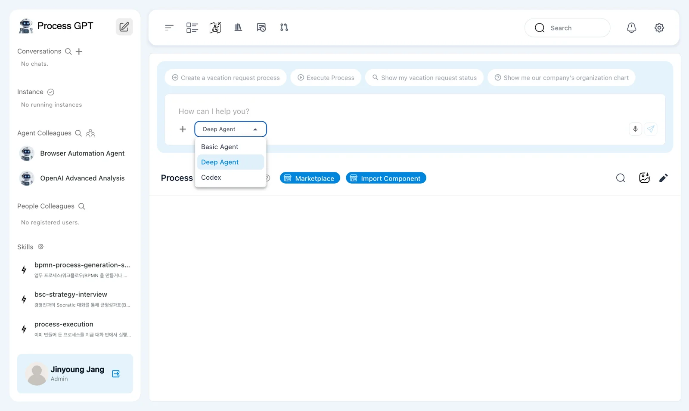
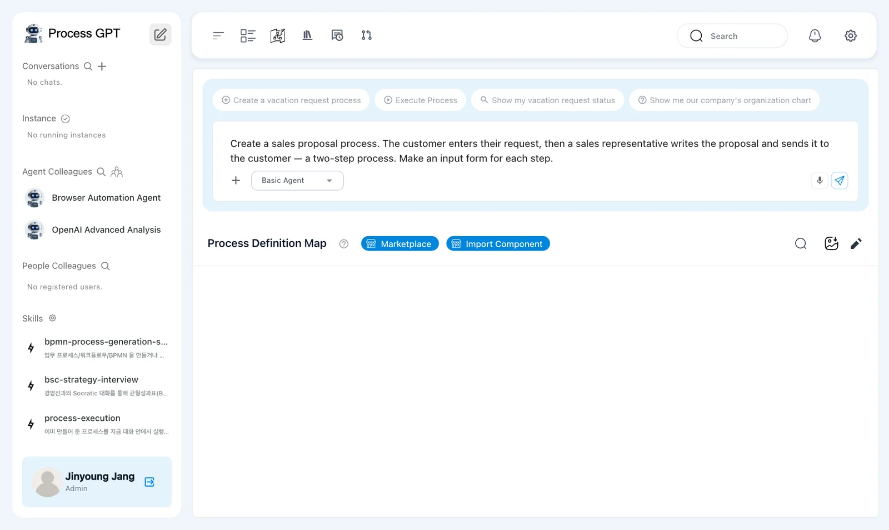
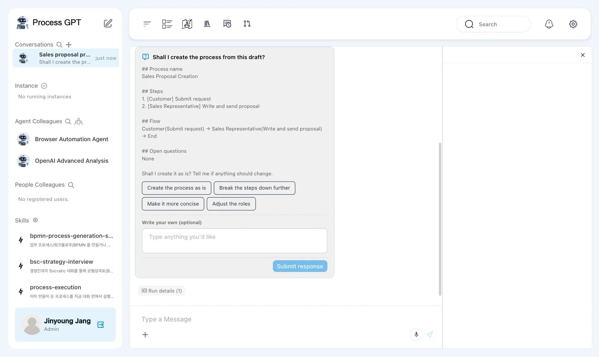
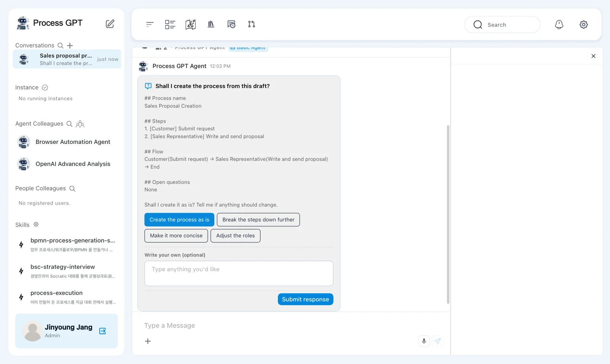
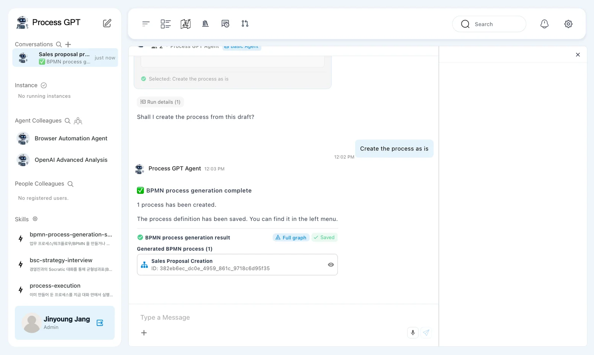
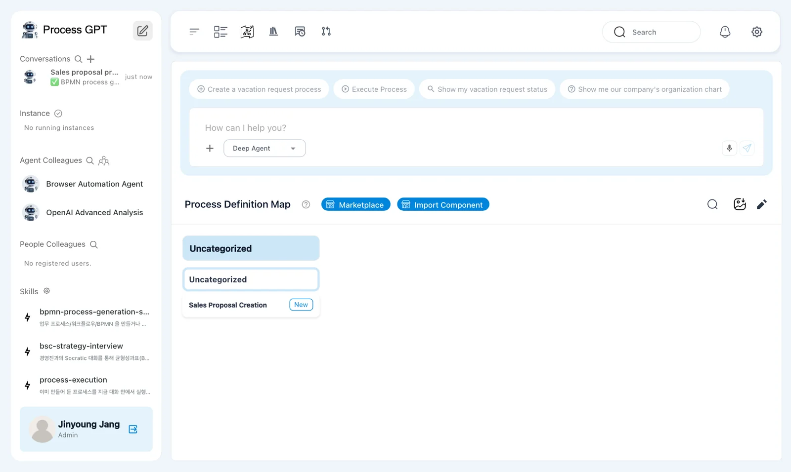

Hanbit Office team lead Jinyoung Jang describes the sales proposal work in chat. Process GPT shows a draft with the steps, owners and flow, gets your confirmation, then creates and saves a process definition with a BPMN flow diagram and input forms.
Why make it a process#
Whenever a customer asks for a proposal, the Hanbit Office sales team works in the same order. They take down what the customer asks for, and a sales representative reads it, writes the proposal and sends it. Today this goes back and forth by email and messenger, so you have to ask to find out how far a request has got, and when the person in charge changes, the notes sometimes get lost.
Turning this order into a process changes things like this.
| Case by case | As a process |
|---|---|
| People remember who does what next | The steps and owners are written in the definition |
| Notes are scattered across email and messenger | They stay in the input form set for each step |
| You have to ask to know the progress | The progress of each case (instance) is visible on screen |
Process GPT stores processes as BPMN. BPMN is the international standard notation that draws a workflow as steps, gateways and owner bands (lanes). You don't need to know how to draw it. Describe it in words, and Process GPT draws it.
Try it 1 — Pick an agent and describe the work#
In the chat box on the home screen (the pencil icon at the top of the sidebar), click Deep Agent ▾ and switch to Basic Agent.

Why Basic Agent
Deep Agent can also create processes, and it builds skills and agents along with them. But it takes several minutes because it works through many steps on its own, and in the current version it sometimes ends with "Something went wrong while putting the process files together, so I'm holding the result back." While you're learning, we recommend the short and reliable Basic Agent.
Describe the process you want in the chat box. Say who does what at each step, and say that you need forms.
Create a sales proposal process. The customer enters their request, then a sales representative writes the proposal and sends it to the customer — a two-step process. Make an input form for each step.

Try it 2 — Review the draft#
When you send it, a new chat room opens and a draft appears within a few seconds (about 8 seconds in our run). Its title is "Shall I create the process from this draft?". It lists the process name, the steps and the role that owns each one, the flow, and open questions.

What to check: two steps with their owners (Customer, Sales Representative) and a flow from the customer to the sales representative to the end ("Customer(Submit request) → Sales Representative(Write and send proposal) → End" in our run). The wording differs a little each run.
Below the draft are options.
| Option | What it does |
|---|---|
| Create the process as is | Creates the process from this draft |
| Break the steps down further · Make it more concise · Adjust the roles | Revises the draft and shows it again |
| Write your own (optional) | Type the change yourself. Example: Have the sales representative take down the request instead of the customer |
Choose "Create the process as is", then click Submit response. Choosing alone doesn't send anything.

Try it 3 — Confirm it was created#
After you submit, "Selected: Create the process as is" and then "Created a work item to generate the process from the consultation." appear. Soon "✅ BPMN process generation complete — 1 process has been created. The process definition has been saved. You can find it in the left menu." arrives. In our run, it took about 24 seconds from sending the description to the saved definition. Below the message is the BPMN process generation result card (Saved, plus the process name "Sales Proposal Creation" and its ID). A process created by Basic Agent is saved without you saving it separately. In other runs it took about 15–25 seconds after submitting the response.

Back on the home screen, "Sales Proposal Creation" has appeared under Uncategorized on the Process Definition Map with a New badge.

Click the name to open the definition. The Customer lane has "Submit Request" and the Sales Representative lane has "Write and Send Proposal", connected by arrows from start to end. You'll look at the definition screen in detail in the next chapter.

The process you made in this chapter#
| Step | Owner (lane) | Input form |
|---|---|---|
| Submit Request | Customer | The customer's request |
| Write and Send Proposal | Sales Representative | The sales proposal |
Form fields vary by run: another run produced five fields for this step—customer requirements, proposal content, quote, schedule and a proposal file attachment.
What makes a good description
- Say who (the role) and what (the output) for each step, like "a sales representative writes the proposal".
- Say the start and end, like "The customer enters their request, then … sends it to the customer".
- Say so if you need forms.
- Mention any gateways (approve/reject). This chapter leaves them out on purpose.
Next chapter#
In the next chapter, you'll open the definition you just made, look at the steps and lanes in the flow diagram and each step's form, and save your changes as versions (Chapter 4).
Check your understanding
- What happens if you only click "Create the process as is" below the draft and wait?
- You got the draft, but you want to change it to "the sales representative takes down the customer's request over the phone". What do you do?
- Where do you find the process you made again?
Answers
- Nothing happens. Clicking an option only selects it; it reaches Process GPT only when you click Submit response.
- Instead of an option, type the change in the Write your own (optional) box and click Submit response, or choose "Adjust the roles" and answer the follow-up questions. Process GPT revises the draft and asks you to confirm again.
- On the Process Definition Map on the home screen (under Uncategorized) or in Process in the sidebar.